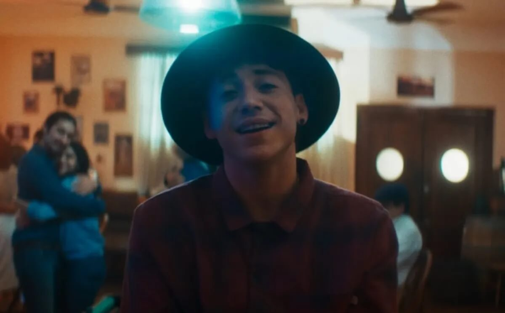

Noticias
Sigue la batalla judicial entre Paulo Londra y su ex por por la cuota alimentaria de sus dos hijas
Bizarrap y Paulo Londra estrenaron su esperada canción récord en YouTube.
Así es “Chance”, el nuevo tema de Paulo Londra que ya causa furor entre sus seguidores.

Paulo Londra regresó por fin a la música: cómo es “Plan A”, su nueva canción.
En medio de una fuerte disputa legal con su ex, Paulo Londra fue papá de otra nena.
Paulo Londra sorprendió a sus seguidores con su talento para el deporte: “Cosa de locos”.
Paulo Londra libre: cómo se desató el conflicto y qué va a pasar con su futuro.